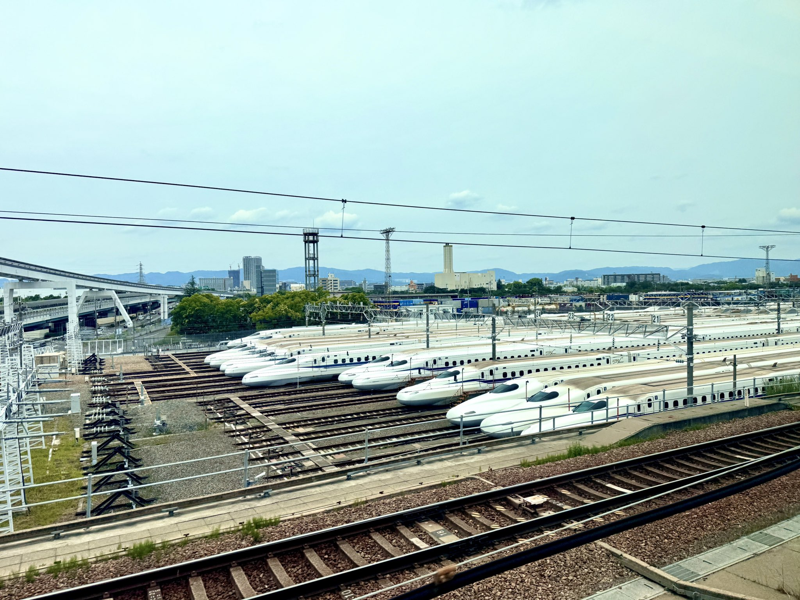
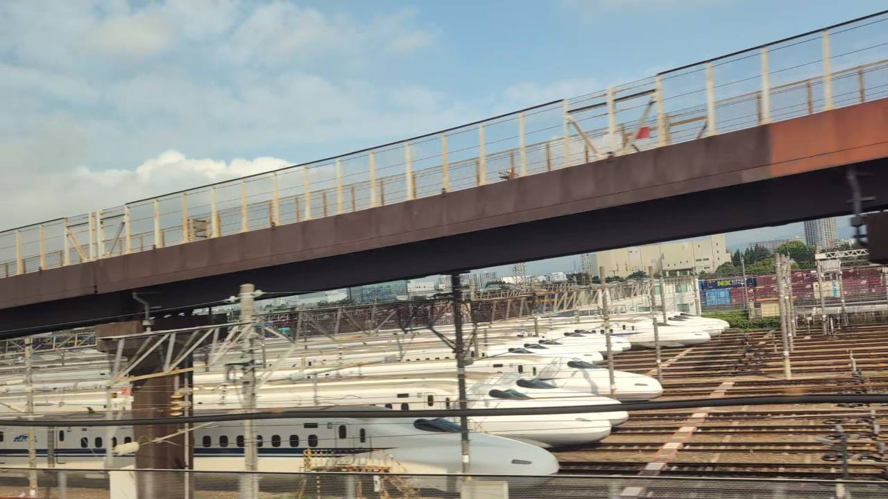
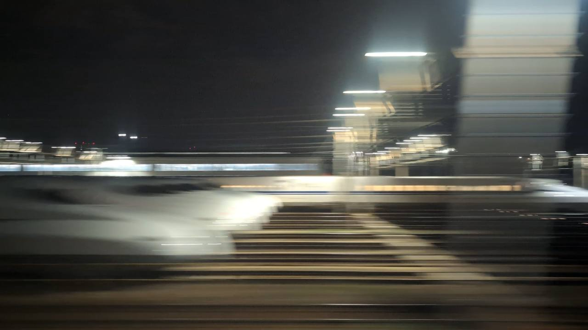

TOKAIDO SHINKANSEN WINDOW VIEW
When can you see Torikai Train Depot from the Shinkansen?
Rows of Shinkansen at rest.

- Section
- Kyoto → Shin-Osaka
- Seat side
- Seat E · mountain side
- Timing
- About 141 minutes after leaving Tokyo on a Nozomi train
- Photos
- 3 photos
How to find Torikai Train Depot
As you approach Shin-Osaka, Seat E may open onto a vast Shinkansen depot: rows of white trains resting beside the line. It is not a classic landmark; it is the backstage of the journey, where the trains wait and are cared for. The view stretches for a while, so keep looking.
If you are traveling from Tokyo toward Shin-Osaka, start watching the Seat E · mountain side window as you approach Kyoto → Shin-Osaka. If you are traveling toward Tokyo, the order is reversed.
Why this view matters
Torikai Train Depot is one of the window views that make the Tokaido Shinkansen more than a transfer. The train moves fast, so visibility depends on weather, seat position, and timing.
Torikai Train Depot in photos

